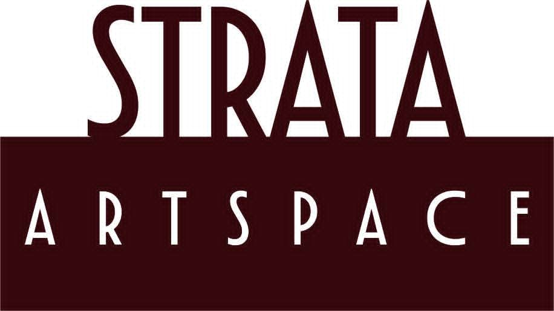

Old Cromwell Historic Precinct • Central Otago
“Strata Artspace is a contemporary art gallery collective known for jewellery, sculpture, paintings, ceramics, photography, current art works of beautiful and unique Central Otago.”
Explore recent works from our resident artists and makers in Central Otago.
Meet the official exhibiting artists at Strata Artspace.
Located at Melmore Terrace, Old Cromwell Historic Precinct, Central Otago. Open 7 days a week from 10:00 AM to 4:00 PM. Come in and meet our artists on duty daily.
Connect with us on Facebook